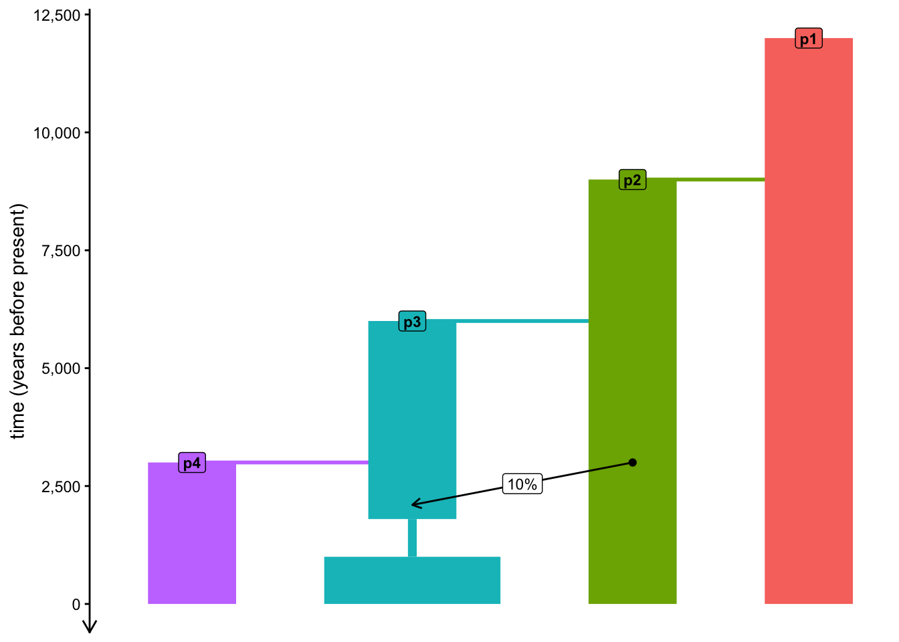

Now that we have a slendr model encoded in a reproducible R script, how can we simulate genomic data in a form that is as close as possible to the genomic data (modern and ancient DNA) we have available in a hypothetical real-world scenario?
Literature
In case you find yourself with extra time for some background reading, I recommend the following papers:
slendr paper which discusses my motivation for building the slendr package,
msprime paper which describes the simulator behind the msprime() engine of slendr,
SLiM paper which introduced tree-sequence recording into the software and describes the simulator behind the slim() engine of slendr.
Preparation
To make sure we’re all on the same page, save the following code in a new script slendr_simulation.R. You can see that this script is largely the outcome of exercises in the previous chapter.
NoteClick to see the script slendr_simulation.R
library(slendr)init_env()p1 <-population("p1", time =12000, N =1000)p2 <-population("p2", time =9000, N =1000, parent = p1)p3 <-population("p3", time =6000, N =1000, parent = p2) %>%resize(N =100, time =1800) %>%resize(N =2000, time =1000)p4 <-population("p4", time =3000, N =1000, parent = p3)gf <-gene_flow(from = p2, to = p3, start =3000, end =2100, proportion =0.1)model <-compile_model(populations =list(p1, p2, p3, p4), gene_flow = gf,generation_time =30,time_units ="years before present")plot_model(model, proportions =TRUE)

Exercise 1: Simulating genomic data
Once we have compiled a slendr model, we can simulate data from it. By default, a simulation from a slendr model always produces a tree-sequence object (sometimes also called ancestral recombination graph, ARG) as a result. We’ll explore the tree-sequence concept in a bit more detail later—for now we can treat it as a black box which “magically” stores genomic variation of a set of individuals.
There are two simulation engines built into slendr implemented by functions msprime() and slim(). For traditional, neutral demographic models, the msprime() engine is much more efficient, which is why we’ll be using that pretty much exclusively.
Note: The alternative engine implemented by the slim() function plays an important role for spatial simulations and for simulations of natural selection — in fact, these applications are the primary reasons why it’s included in slendr in the first place.
Here’s how you can simulate a tree sequence from a compiled slendrmodel. You will be seeing this kind of pattern over and over again, so it’s worth keeping it in mind any time you will want to simulate data from your models.
ts <-msprime( model,sequence_length =<length of the simulated genome [in bp]>,recombination_rate =<uniform recombination rate [in crossovers per bp per generation]>)
Note: For the time being, slendr assumes a uniform recombination rate.
Simulate a tree sequence from your compiled model by adding the appropriate msprime() command into the script slendr_simulation.R, running it, then storing the result in a variable ts. Set the parameters for this simulation as sequence_length = 1e6 and recombination_rate = 1e-8.
NoteClick to see the solution
This command simulates a tskit tree sequence from a slendr model. Again, note that we don’t have to write any msprime or tskit code to implement the simulation because slendr does all the work for us!
Type out the simulated ts object in the console — what do you see? Try to relate some of the information in the printed summary to our quick overview discussion of tree sequences. What could be the difference between “samples” and “individuals”? How many “trees” does the tree sequence have and how many “mutations” are stored in it?
NoteClick to see the solution
Evaluating the ts variable in the R console should give you a summary of a tree-sequence object with some lower-level technical details about the genomic sequence which it encodes:
For instance, our tree sequence contains genomic information for 5000 individuals, each of them diploid. This makes for 10000 samples in total, where a “sample” is a “node” in a tree sequence representing one haplotype (i.e., one chromosome) of a simulated individual. We can leave other detail aside for now.
And notice that there are no mutations! How can this be possible, if we supposedly ran a genomic simulation? More on that later.
From now on, and similarly to the symbol model, whenever we refer to ts, we will be talking about some simulated tree-sequence object stored in an R variable ts.
Exercise 2: Referring to simulated individuals
If we want to compute population genomic statistics on simulated tree-sequence data, we need a way to refer to individuals and populations. For this purpose, slendr provides three important functions: ts_recorded(), ts_names(), and (occasionally also useful) ts_nodes(). At the bare minimum, these functions accept the tree sequence ts as their first argument (i.e., can be run such as ts_recorded(ts)).
Try answering these questions by running these three functions and inspecting and comparing their outputs (this is a good opportunity to refresh techniques for munging tabular data introduced in our tidyverse chapter):
How is the result of ts_nodes() different from ts_recorded()?
What is the meaning of the time values in the tables produced by these two functions? Are they the same in both?
How many individuals in total are in the tree sequence based on these two functions, and how many of them are in each population (this is indicated by the pop column for each row)? Why do you get the numbers that you see (in the context of the model which you programmed)?
How does the output of ts_names() differ from those other two table-producing functions?
NoteClick to see the solution
1. ts_recorded()
The function ts_recorded() gives us a small metadata table with recorded individuals’ names, populations, and times. This is very useful for whenever we want to compute statistics for each individual or each population, study the dynamics of those statistics as time-series (we’ll see this later), etc.
Crucially, each recorded individual receives a symbolic name: first its population label, then a numerical suffix.
# this is the table of recorded individualsts_recorded(ts)
# this is how many individuals we recordedts_recorded(ts) %>% nrow
[1] 5000
This is how we can compute how many individuals we have recorded from each population — if you look closely, you can see that these numbers are equal to the \(N_e\) programmed for each population in our model, meaning that we have the genome of literally everyone alive (quite unrealistic!):
# A tibble: 4 × 2
pop n
<chr> <int>
1 p1 1000
2 p2 1000
3 p3 2000
4 p4 1000
2. ts_nodes()
The function ts_nodes() gives us a much larger table of tree-sequence nodes, which includes not only information about recorded individuals’ chromosomes (one node, or chromosome, for each individual, meaning that we get two rows of the table for each individual) but plenty of other metadata as well:
# the entire table of metadata for every single node in the tree sequencets_nodes(ts)
# ... which is a lot of data compared to just recorded individuals!ts_nodes(ts) %>% nrow
[1] 21214
# here's a selection for a single individual (two rows because that# individual is diploid)ts_nodes(ts) %>%filter(name =="p1_42")
# A tibble: 2 × 8
name pop ind_id node_id time time_tskit sampled pop_id
<chr> <fct> <dbl> <int> <dbl> <dbl> <lgl> <int>
1 p1_42 p1 41 82 0 0 TRUE 0
2 p1_42 p1 41 83 0 0 TRUE 0
Additionally, the table also contains information about the recorded individuals’ ancestors—i.e. individuals who lived in the genealogical history of the recorded individuals (recall that we only got individuals “in the present-day”, at time 0), but whose complete genomic information we no longer have, because they mostly likely passed only a subset of their genomes to the individuals which we actually “sequenced” in the simulation. Note that they, obviously, don’t have any symbolic names attached to them:
ts_nodes(ts) %>%filter(time >0)
# A tibble: 11,214 × 8
name pop ind_id node_id time time_tskit sampled pop_id
<chr> <fct> <dbl> <int> <dbl> <dbl> <lgl> <int>
1 <NA> p3 NA 10000 0.0122 0.000407 FALSE 2
2 <NA> p4 NA 10001 0.0127 0.000423 FALSE 3
3 <NA> p3 NA 10002 0.0309 0.00103 FALSE 2
4 <NA> p4 NA 10003 0.0414 0.00138 FALSE 3
5 <NA> p3 NA 10004 0.0650 0.00217 FALSE 2
6 <NA> p3 NA 10005 0.0745 0.00248 FALSE 2
7 <NA> p3 NA 10006 0.0784 0.00261 FALSE 2
8 <NA> p4 NA 10007 0.0811 0.00270 FALSE 3
9 <NA> p1 NA 10008 0.0820 0.00273 FALSE 0
10 <NA> p3 NA 10009 0.0886 0.00295 FALSE 2
# ℹ 11,204 more rows
3. ts_names()
Finally (and most usefully in practice), ts_names() gives us individuals as a plain vector of names, without any additional information.
We can see that our tree sequence contains a massive number of individuals. Too many, in fact — we recorded every single individual alive at the end of our simulation (5000!) , which is something we’re unlikely to be ever lucky enough to have, regardless of which species we study.
To get closer to the scale of the genomic data that we usually work with, you can restrict our simulation to “sequence” only a subset of individuals—using a process I called “scheduling of recording” of individuals, implemented by the slendr function schedule_recording(). Simply speaking, this is a functionality of slendr which precisely defines which individuals will be recorded in the tree sequence (while ignoring everyone else).
The function follows the structure in the following code chunk, representing another very useful pattern worth keeping in mind going forward:
schedule <-schedule_recording(<compiled slendr model>,times =<times of recording>,list(<population object>, <number of samples to record>), [... etc. ... ])
Finally, you use this schedule object in a standard msprime() function call by setting it as the argument of the same name (schedule =) like this:
To get an idea about what this function does in practice, modify the command which simulates the ts object in your script slendr_simulation.R according to the snippet above, but include a schedule for recording 5 individuals from each of the four populations. When you re-run the new simulation to get a new ts object and type ts into your console, do you see a change? Again, use your knowledge of ts_recorded() and some tidyverse table processing to inspect the set of recorded individuals.
Hint: To make the differences easier to see, maybe keep the original simulation command in your script (the one without the schedule) but modify it to create a variable ts_big before you simulate the new ts object from the given schedule.
# original simulation command (note the missing schedule)ts_big <-msprime(model, sequence_length =1e6, recombination_rate =1e-8)# new tree-sequence recording (with the schedule)ts <-msprime(model, sequence_length =1e6, recombination_rate =1e-8, schedule = schedule)
When we type the two tree-sequence variables in the R console, we see that the new tree sequence is much smaller (not just the number of individuals, but also its memory footprint visible as “Total Size”):
# A tibble: 4 × 2
pop n
<chr> <int>
1 p1 5
2 p2 5
3 p3 5
4 p4 5
ts_recorded(ts_big) %>%group_by(pop) %>% tally
# A tibble: 4 × 2
pop n
<chr> <int>
1 p1 1000
2 p2 1000
3 p3 2000
4 p4 1000
Note: In order to make the recording of smaller number of individuals from a (potentially huge) number of population easier, schedule_recording() supports a shortcut of list("each", <number>) which records the given number of individuals from every population in the model at the given time.
Exercise 4: Complex recording schedules
What if we need to simulate different number of individuals from different populations at specific times instead of individuals from every population at one time? Doing this with a single call to schedule_recording() is not possible. Luckily, multiple schedules can be easily combined together into a single sampling schedule. Let’s see how to do this.
Type the schedule variable in your R console. What do you see? Can you guess why did I say that multiple schedules can be easily combined? And how could we combine them?
NoteClick to see the solution
The function schedule_recording() produces a plain old data frame! It contains information we used in the schedule_recording() call (population names, times, etc.), plus a bunch more additional data which is currently irrelevant. For instance, notice the time, pop, and n columns below:
schedule
# A tibble: 4 × 8
time pop n name y_orig x_orig y x
<int> <chr> <int> <lgl> <lgl> <lgl> <lgl> <lgl>
1 0 p1 5 NA NA NA NA NA
2 0 p2 5 NA NA NA NA NA
3 0 p3 5 NA NA NA NA NA
4 0 p4 5 NA NA NA NA NA
Normally we don’t ever have to look at this data (unless something goes wrong with the sampling and troubleshooting slendr itself is needed), but knowing the format of the schedule means we can easily combine multiple schedules using standard functions such as rbind() (included in base R).
In later sessions, you will have a chance to work on implementing many real-world scenarios from widely established research in population genomics, particularly those from the field of ancient DNA. Naturally, in cases like this, we need to be able to simulate sequences of “ancient” individuals as well as various “present-day” reference panels.
In preparation for this, implement the recording schedule summarized into the table below into your slendr_simulation.R script. You will have to figure out how many individual schedules you’ll have to create using schedule_recording(), then bind them into a single schedule using the function rbind() mentioned above. Then, simulate a new tree sequence object ts from this new complex schedule, modifying your current solution script accordingly.
time (years ago)
population
# of individuals to record
interpretation
0
p1
1
outgroup
0
p2
1
admixture source
from 5 k B.P., every 1 k years
p3
5
time-series of ancient individuals
0
p4
10
panel of reference individuals
Hint: To implement the recording of the ancient DNA time series, note that you can provide a vector of numbers as the times = argument of schedule_recording(). See the help page for ?schedule_recording for more information and to see a concrete example.
NoteClick to see the solution
Inspecting the table above, it looks like we have effectively two groups of recording events determined by the times indicated in the first column: one group of individuals in the “present-day” (i.e., at time 0) and a second group with time-series of ancient individuals. So let’s leverage that to create two recording schedules: “modern” and “ancient”:
First scheduling of modern individuals:
modern <-schedule_recording(model, times =0, list(p1, 1), list(p2, 1), list(p4, 10))
Then scheduling of ancient individuals:
ancient_times <-seq(5000, 1000, by =-1000)ancient <-schedule_recording(model, times = ancient_times, list(p3, 5))
Then we can create a single sampling schedule like this:
schedule <-rbind(modern, ancient)
Finally, we can use the schedule in our simulation just like we showed above:
Let’s verify that we got the correct number of individuals by printing the entire metadata table and counting the number of individuals recorded in the tree sequence:
ts_recorded(ts) %>%group_by(pop, time) %>% tally
# A tibble: 8 × 3
# Groups: pop [4]
pop time n
<chr> <dbl> <int>
1 p1 0 1
2 p2 0 1
3 p3 1000 5
4 p3 2000 5
5 p3 3000 5
6 p3 4000 5
7 p3 5000 5
8 p4 0 10
Exercise 5: Recording of named individuals
Sometimes, we don’t just want to record a given set of “anonymous” samples, but we want to be able to work with unique, named individuals. This can be especially helpful when we need to reconstruct a particular scenario in some specific archaeological context (for instance, we want to work with some very precious archaeological sample, such as the “Ust’Ishim hunter gatherer”).
We can do so by calling schedule_recording() in a slightly modified way which doesn’t use the normal syntax list(<population>, <number>), but instead uses the format of list(<population>, 1, "NameOfTheIndividual").
Use this technique to modify your recording schedule (for instance, based on combining two recording schedules called modern and ancient) to implement a (third) unique recording event which will give the one representative individual of the admixture source population the name "SourceInd" and the outgroup individual will be named "OutgroupInd". Then create a new combined schedule again, and verify that you got the newly named individuals in the new simulated tree sequence ts using the function ts_recorded().
NoteClick to see the solution
We’ll be more succinct now (see the full explanation to the modern and ancient schedules in the solution to the previous exercise):
outgroup <-schedule_recording(model, times =0, list(p1, 1, "OutgroupInd"))source <-schedule_recording(model, times =0, list(p2, 1, "SourceInd"))modern <-schedule_recording(model, times =0, list(p4, 10))ancient <-schedule_recording(model, times =seq(5000, 1000, by =-1000), list(p3, 5))schedule <-rbind(outgroup, source, modern, ancient)
Now we can simulate a new tree sequence with more specifically named individuals:
You may have noticed that plot_model() has a number of optional arguments. One of them is called schedule and it accepts a sampling schedule (such as the one you just created) as its input. Use your model and sampling schedule to visualize your model.
This functionality can be useful as an additional validation of your modeling scripts, so always remember to use this for sanity checking your simulations (after all, a picture can be worth more than thousand words dozens of lines of code)!
NoteClick to see the solution
Here’s is the model on its own:
plot_model(model, proportions =TRUE)
Here is the model with recording numbers overlaid on top:
Note: As you’ve seen above, the visualization is often a bit wonky and convoluted with overlapping elements, so don’t be too frustrated if the results of your plot_model() visualizations are not too pretty. The function has been designed as a validation and troubleshooting tool, rather than a tool to create publication-ready figures.
Catching up
If you want to catch up to the point at which this section would conclude, here is the version of our simulation script slendr_simulation.R at the end of the final exercise:
NoteClick to see the script slendr_simulation.R
library(slendr)init_env()p1 <-population("p1", time =12000, N =10000)p2 <-population("p2", time =9000, N =2000, parent = p1)p3 <-population("p3", time =6000, N =5000, parent = p2)p4 <-population("p4", time =3000, N =2000, parent = p3)gf <-gene_flow(from = p2, to = p3, start =3000, end =2100, proportion =0.1)model <-compile_model(populations =list(p1, p2, p3, p4), gene_flow = gf,generation_time =30,time_units ="years before present")outgroup <-schedule_recording(model, times =0, list(p1, 1, "OutgroupInd"))source<-schedule_recording(model, times =0, list(p2, 1, "SourceInd"))modern <-schedule_recording(model, times =0, list(p1, 1), list(p4, 10))ancient <-schedule_recording(model, times =seq(5000, 1000, by =-1000), list(p3, 5))schedule <-rbind(outgroup, source, modern, ancient)plot_model(model, proportions =TRUE, schedule = schedule)ts <-msprime(model, sequence_length =1e6, recombination_rate =1e-8, schedule = schedule)